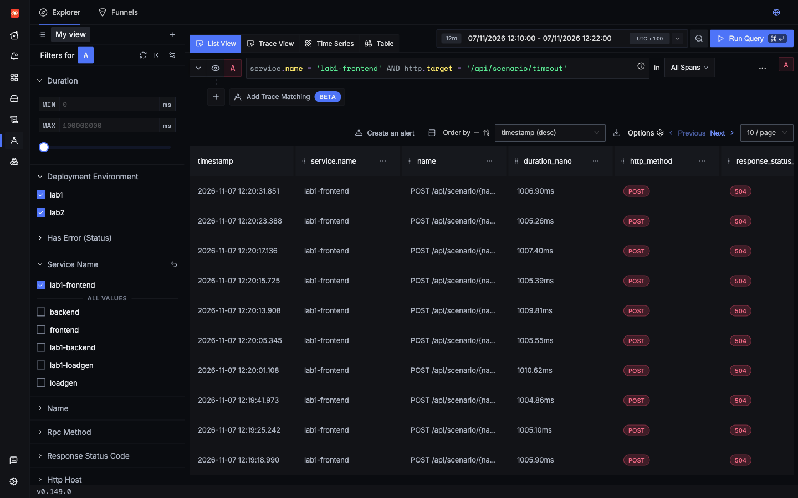
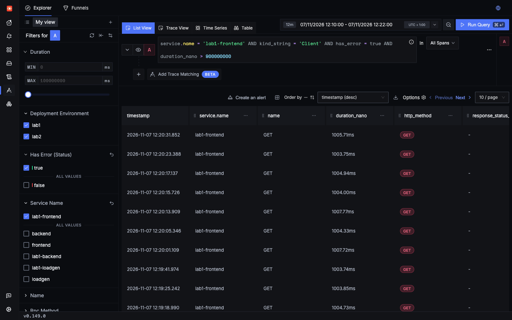
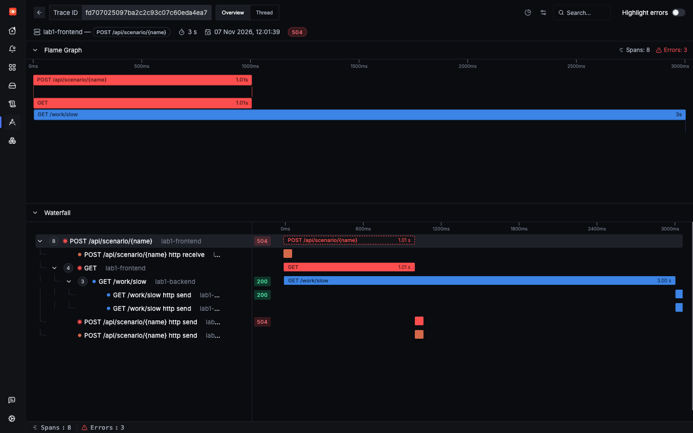

Lab 1: incident 5 of 6
A timeout
The frontend gives up after one second, and the user gets a 504. But the backend carries on working for two more seconds. This wasted work is very hard to see in logs, and obvious in a trace.
1Trigger it
The timeout scenario calls the backend with a 1-second limit, on a route that takes 3 seconds.
2Symptom
The user gets a 504 after about a second. A saved run took 1,012 ms. The frontend logged one line:
backend timed out after 1sThe backend's own span looks fine, because from its point of view it succeeded.
3Where to look
- Check Exceptions for
httpx.ReadTimeout. Its message is blank, because the exception has no text, so filter on the type. - Search for failed outgoing calls in the Traces Explorer.
- Open a trace, and compare the lengths of the client and server spans.
4Search
Use the URL path, or look for outgoing calls that failed and took about as long as the timeout. The second search works in any app, because it doesn't depend on knowing the route:


5Evidence

GET /work/slow runs on to 3.00 s, well past the end of its parent.| Span | Duration | Status | What it shows |
|---|---|---|---|
lab1-frontend Server | 1,006.7 ms | Error, 504 | The user's experience |
lab1-frontend Client GET | 1,005.5 ms | Error, httpx.ReadTimeout | Where the frontend gave up |
lab1-backend Server GET /work/slow | 3,001.8 ms | Unset, 200 | Kept working, then "succeeded" |
- A child span outlasting its parent is the signature of a client giving up.
- The backend reported HTTP 200, for a response nobody read.
- Two seconds of backend work were wasted on each timed-out request.
The ReadTimeout stack trace ends inside httpx, so it does not lead to your code. The Client span's position in the trace is what tells you which call it was.
6Root cause
The two sides disagree on how long the work should take:
labs/lab1-hands-off/app/frontend.py lines 77–8377async def s_timeout(_p: dict) -> dict:
78 try:
79 r = await backend.get("/work/slow", params={"ms": 3000}, timeout=1.0)
80 except httpx.ReadTimeout as exc:
81 log.error("backend timed out after 1s")
82 raise HTTPException(status_code=504, detail="backend timeout") from exc
83 return r.json()The frontend allows 1 second, and the backend takes 3. The backend has no idea the caller has gone: the handler is a plain sleep, and nothing cancels it.
7Resolution
There are three real options, and the right one depends on what the user needs.
- Make the backend faster, so it fits the budget. Usually best.
- Raise the timeout, if waiting 3 seconds is acceptable to users:
async def s_timeout(_p: dict) -> dict:
try:
- r = await backend.get("/work/slow", params={"ms": 3000}, timeout=1.0)+ r = await backend.get("/work/slow", params={"ms": 3000}, timeout=4.0) except httpx.ReadTimeout as exc:
- log.error("backend timed out after 1s")+ log.error("backend timed out after 4s") raise HTTPException(status_code=504, detail="backend timeout") from exc
To try this one: make that edit in labs/lab1-hands-off/app/frontend.py, save it, and deploy it. Saving isn't enough, because the pods run the image from the last build. What this command does.
make lab1Fire the same request. It should now answer HTTP 200 after about 3 seconds, not 504 after 1 second.
Then undo the fix. The bugs in this lab are there on purpose. With the fix deployed, this page's button can no longer show the incident, for you or anyone else using this copy of the lab. Lab 1's load generator also uses this scenario as one of its five kinds of error, which Lab 4's error-rate alert is tested with. To undo it:
git restore labs/lab1-hands-off/app/frontend.py
make lab1- Stop the wasted work. Pass a deadline to the backend, and have it check that before and during expensive steps. This takes more work, but it matters under load: retries on top of timeouts multiply the wasted work, and that can turn a slowdown into an outage.
Check yourself: In the timeout trace, why does the backend span show no error?
Check yourself: Which span holds the httpx.ReadTimeout?